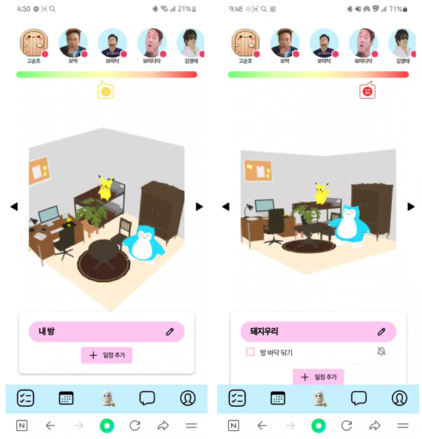
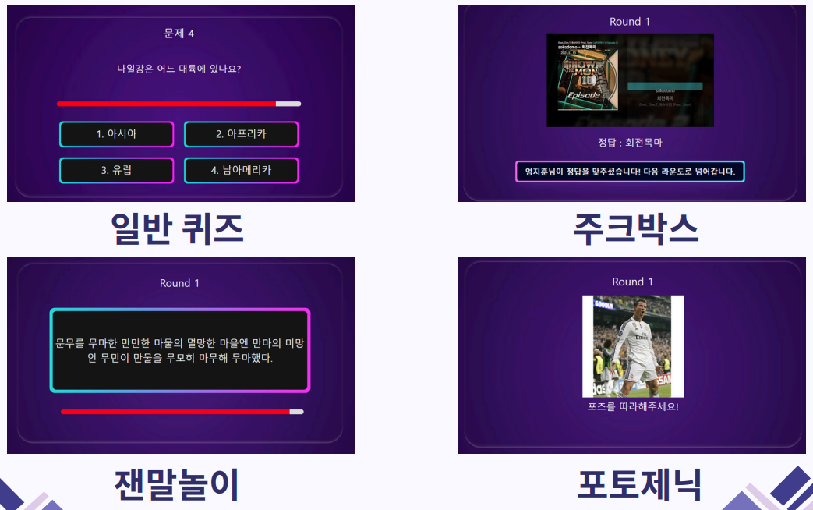
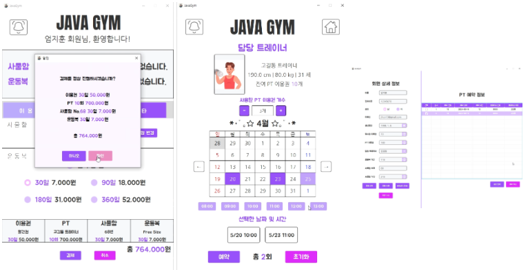

Profile
안녕하세요. 웹 개발자 엄지훈입니다.
저는 풀스택 개발자로써 다양한 프론트엔드와 백엔드 기술을 활용하여 웹 페이지를 만들 수 있습니다.AWS(아마존 웹 서버) 혹은 NCP(네이버 클라우드 플랫폼)을 활용하여 서버를 호스팅 후 관리 해 본 경험이 있고, Docker와 Jenkins를 활용하여 배포와 빌드를 자동화하여 팀의 개발 및 배포 효율성을 높인 경험이 있습니다.
Projects
담당한 프로젝트를 기간 순으로 배치했습니다.
HouseKeeping (2024.07.08 ~ 2024.08.25)

혼자 자취하는 사회 초년생들을 위한 사이트입니다. 사용자의 의식주를 전부 관리해주는 기능이 있습니다.
방 청소 루틴을 설정하고 이를 어길 경우 알림 메시지가 오고 내 방의 오염도가 증가하는 기능,
내 냉장고 안에 있는 식재료를 관리할 수 있고 현재 냉장고 안에 있는 식재료로 할 수 있는 요리를 추천해 주는 기능,
옷장 안에 있는 옷을 등록하여 한눈에 보면서 관리할 수 있고 현재 날씨를 고려해서 어떤 옷을 입을 지 추천하는 기능 등이 있습니다.
방 청소 루틴을 설정하고 이를 어길 경우 알림 메시지가 오고 내 방의 오염도가 증가하는 기능,
내 냉장고 안에 있는 식재료를 관리할 수 있고 현재 냉장고 안에 있는 식재료로 할 수 있는 요리를 추천해 주는 기능,
옷장 안에 있는 옷을 등록하여 한눈에 보면서 관리할 수 있고 현재 날씨를 고려해서 어떤 옷을 입을 지 추천하는 기능 등이 있습니다.
Q2Beat (2024.06.03 ~ 2024.07.05)

핸드폰만 가지고 있다면 누구나 참여 가능한 퀴즈 게임입니다.
호스트가 방을 만든 뒤, QR 코드 혹은 url을 활용하여 핸드폰으로 방에 입장을 하고, 다같이 퀴즈를 풀어서 순위를 가릴 수 있습니다.
단순한 퀴즈 뿐만 아니라 음성 인식과 문자열 비교 알고리즘을 활용한 잰말놀이 퀴즈,
Machine Leaning을 활용한 모델이 두 사진의 유사도를 측정하여 주어진 포즈와 얼마나 비슷한 포즈를 취했는지 볼 수 있는 포토제닉 퀴즈 등이 있습니다.
호스트가 방을 만든 뒤, QR 코드 혹은 url을 활용하여 핸드폰으로 방에 입장을 하고, 다같이 퀴즈를 풀어서 순위를 가릴 수 있습니다.
단순한 퀴즈 뿐만 아니라 음성 인식과 문자열 비교 알고리즘을 활용한 잰말놀이 퀴즈,
Machine Leaning을 활용한 모델이 두 사진의 유사도를 측정하여 주어진 포즈와 얼마나 비슷한 포즈를 취했는지 볼 수 있는 포토제닉 퀴즈 등이 있습니다.
JavaGym (2024.03.25 ~ 2024.04.22)

헬스장을 이용하는 사람들을 위한 키오스크 프로그램 입니다.
회원들은 로그인만 하면 헬스장 입장, PT 예약 등의 기능을 이용 가능합니다. 결제 기능의 경우 구현되지 않았습니다.
트레이너는 자신이 담당하는 회원들의 목록과 예약 목록을 볼 수 있습니다. 예약 등록 및 수정, 삭제 또한 가능합니다.
관리자는 헬스장에 등록된 트레이너와 회원들의 정보 열람 및 수정이 가능합니다. 수동으로 트레이너와 회원을 등록하는것 또한 가능합니다. 그리고 회원들의 출입 로그를 확인할 수 있습니다.
회원들은 로그인만 하면 헬스장 입장, PT 예약 등의 기능을 이용 가능합니다. 결제 기능의 경우 구현되지 않았습니다.
트레이너는 자신이 담당하는 회원들의 목록과 예약 목록을 볼 수 있습니다. 예약 등록 및 수정, 삭제 또한 가능합니다.
관리자는 헬스장에 등록된 트레이너와 회원들의 정보 열람 및 수정이 가능합니다. 수동으로 트레이너와 회원을 등록하는것 또한 가능합니다. 그리고 회원들의 출입 로그를 확인할 수 있습니다.